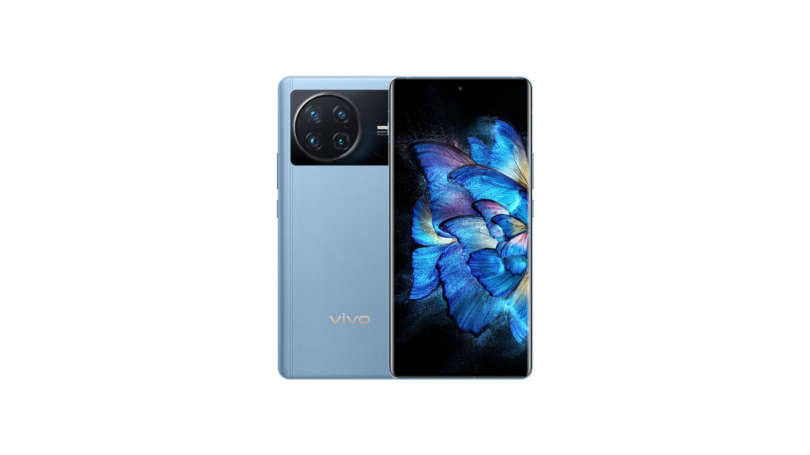
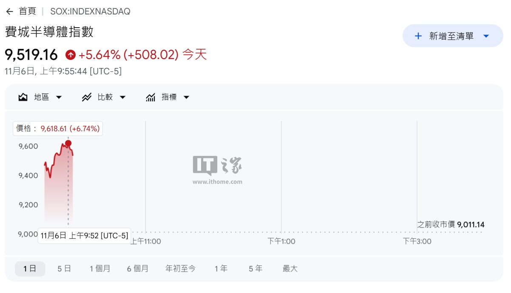
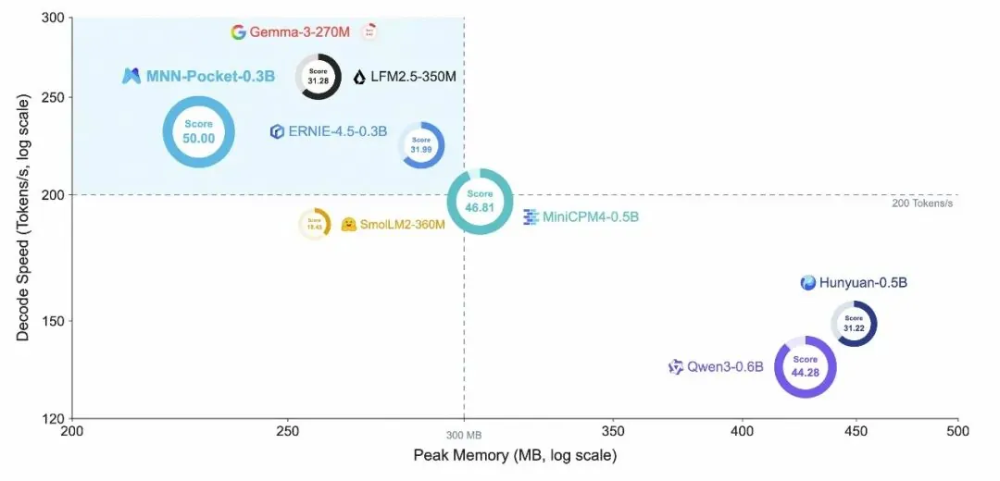
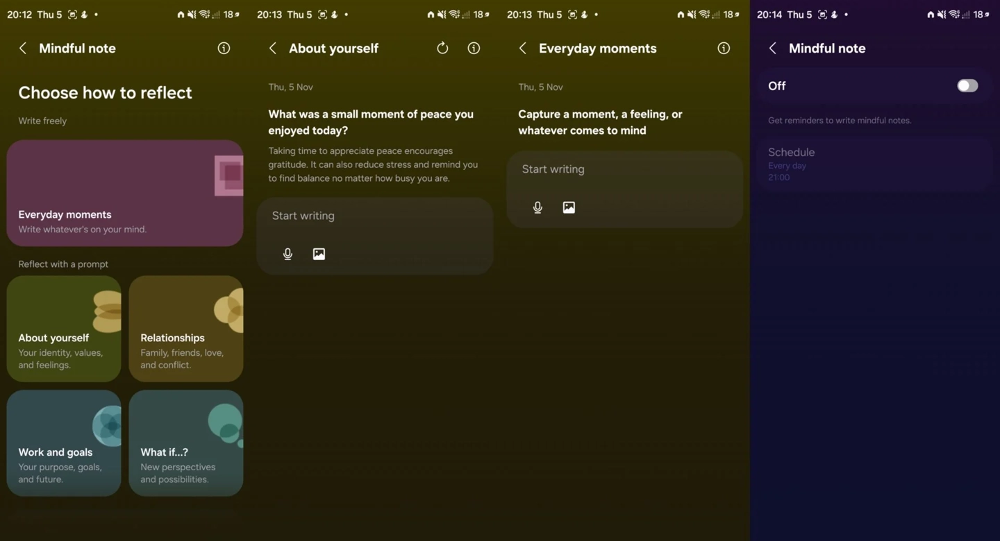
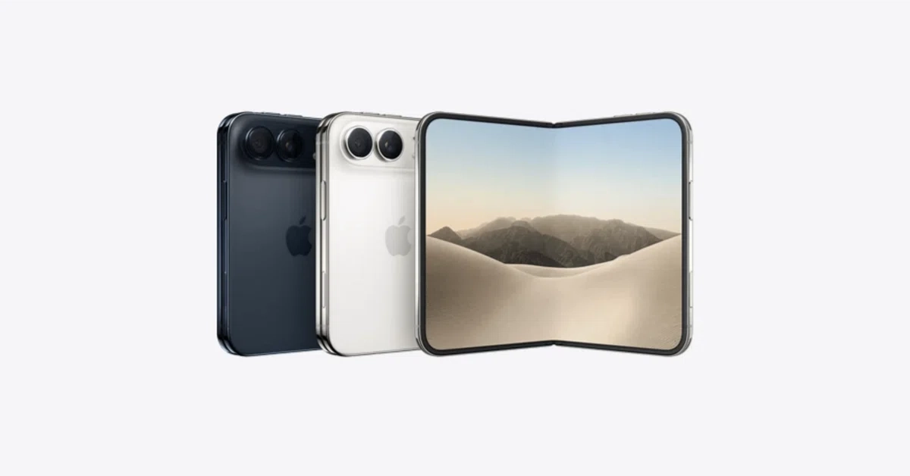
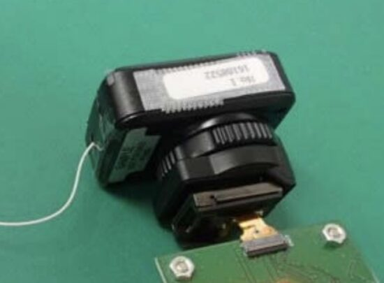
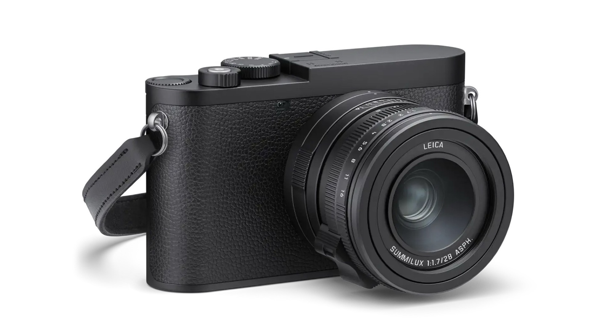
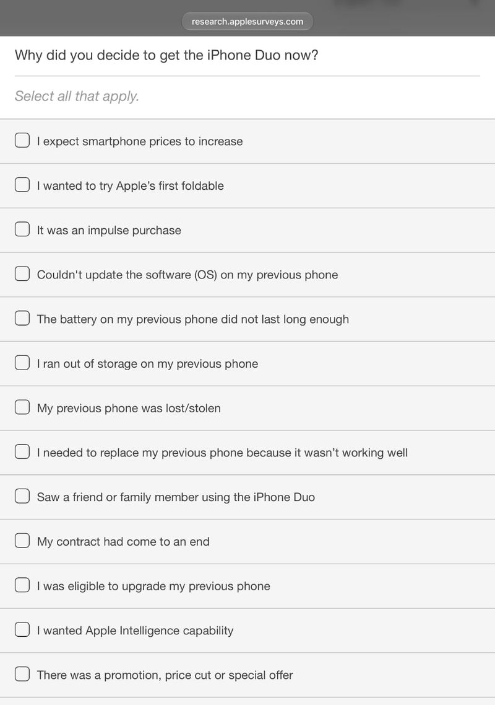
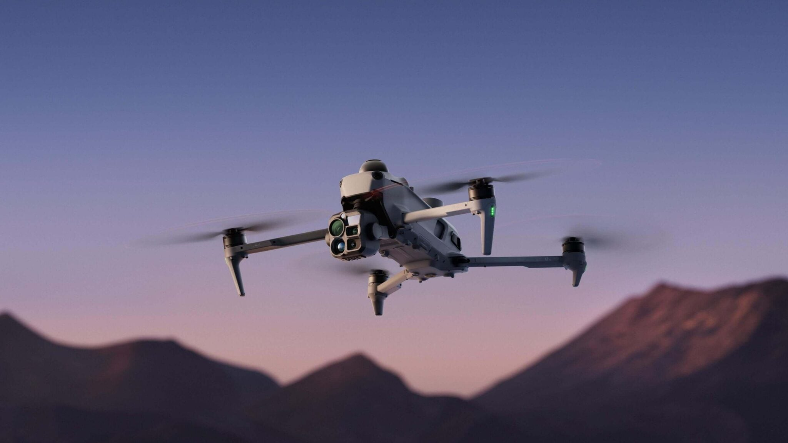
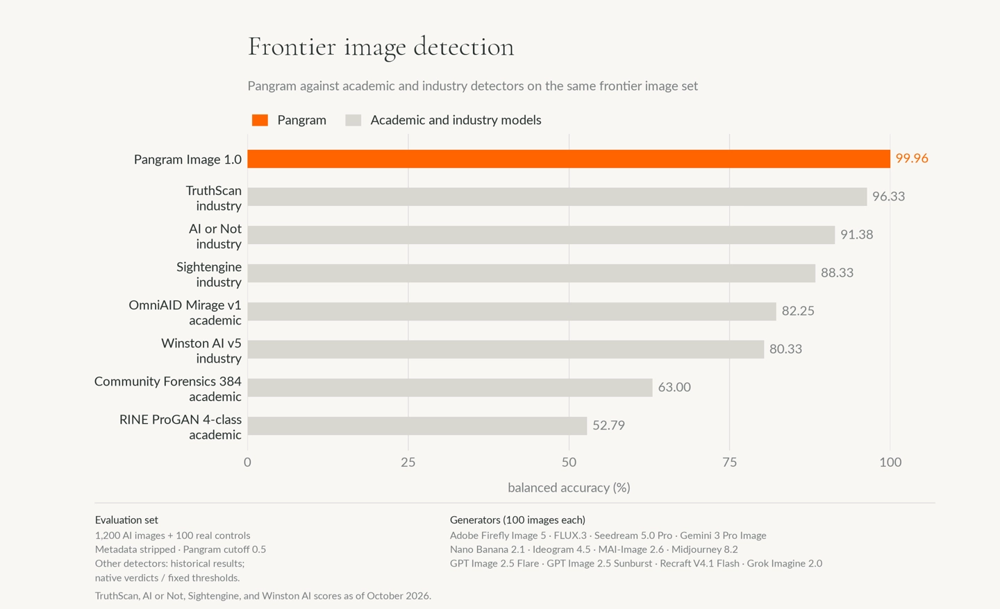

뉴스
기술의 변화, 매일 한눈에.
카메라 · 스마트폰 · AI, 해외 테크 소식을 모아 전합니다.
최근 발행2026-11-07
새로 들어온 소식
최신 뉴스
전체 4,193개 기사
미국 증시 AI 하드웨어 주식 일제히 반등, 필라델피아 반도체 지수 6.5% 상승

타오바오 MNN 팀, 0.3B 모바일 모델 오픈소스 공개, Apple iPhone 18 Pro에서 오프라인으로 350 token/s 달성

One UI 9.5 버전 Samsung 헬스 앱 공개: '마음 챙김 노트' 추가, 감정 일기를 스마트폰에 기록

Samsung, Apple, '차별화된 초박형 유리' 스크린 경쟁, 2028년 더 긁힘에 강한 폴더블 스마트폰 출시 예정
OPPO, 내년 제품 전략은 폴더블 스마트폰에 집중, 코드명 '푸야오' 짐벌 카메라 출시 예정
OPPO Find X10 Ultra로 예상되는 모 제조사의 울트라 스마트폰 프로젝트가 중단된 것으로 알려졌다

Nikon Z70 카메라 공개: 4,100만 화소, 8K 60p 녹화, 상단에 REC 버튼 추가

라이카 Q3 43 모노크롬 카메라 다음 달 출시, 흑백 사진만 촬영 가능
Caviar, 운석 및 악어가죽 등으로 맞춤 제작 가능한 '12 별자리' 에디션 iPhone Duo 출시

iPhone 구매 가이드 2026: 어떤 iPhone을 사야 할까?

Huawei Mate 90 시리즈 스마트폰, HarmonyOS 7.0.0.111SP15 업데이트로 XRING Z10 모듈 카메라 촬영 효과 최적화
3,000~6,000위안대 고성능 서브 플래그십 스마트폰 추천, 모든 게임 시나리오 요구사항 충족
게이밍 서브 플래그십과 플래그십 스마트폰 비교: 핵심 성능 차이 분석 및 구매 가이드

첫 폴더블 아이폰 듀오 출시 약 2주 후: Apple, 접힘, 이미지 품질 등 핵심 경험에 대한 설문조사 시작

DJI Matrice 5T, LiDAR, mmWave 레이더, 176배 줌, 59분 비행 시간으로 글로벌 출시
CUKTECH 10/15호 파워 스테이션 3차 OTA 업데이트, 전력 인터페이스 테마 전환 및 iPhone 18/Duo 인식 등 추가

Apple 액션 버튼, 내년 하반기 신형 iPhone에서 공식적으로 사라질 예정
Samsung SDS 구미 AI 데이터센터 착공, 삼성 계열 로봇 사업에 컴퓨팅 파워 지원

Pangram, AI 이미지 감지 모델 공식 출시, 정확도 99.96% 달성
Honor CEO 리젠: AI 진입점 경쟁은 제로섬 게임이 아니며, 업계는 진입점 주권을 사용자에게 돌려줘야 한다

차이나모바일: 올해 스마트폰 인터넷 트래픽 18% 증가, 작년 대비 2배 성장, AI 생성 콘텐츠 트래픽 5배 증가 견인
검색 결과가 없습니다
다른 검색어를 입력하거나 필터를 초기화해 보세요.